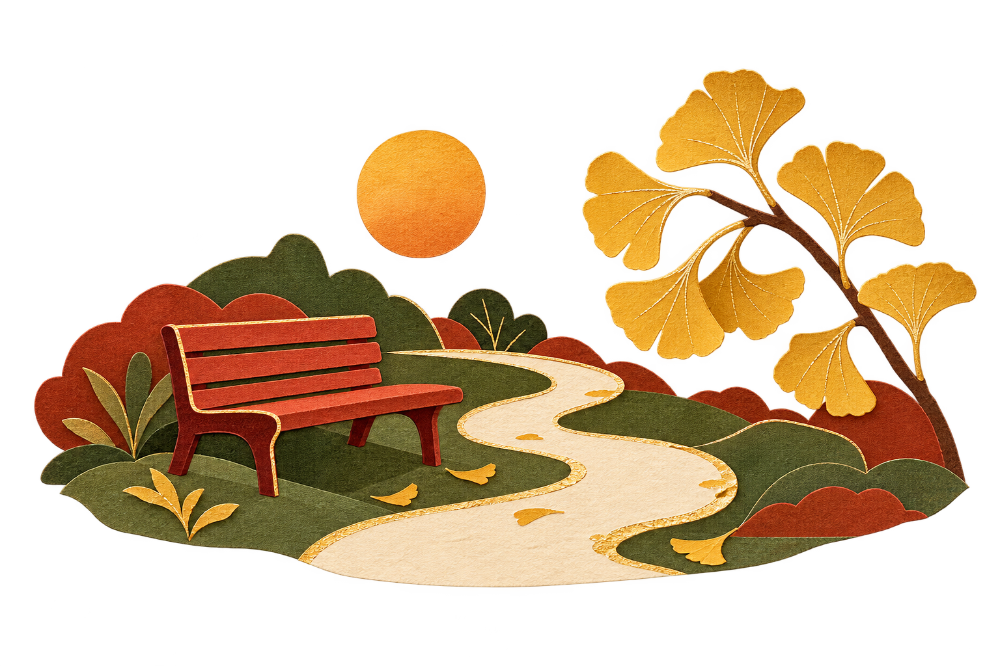
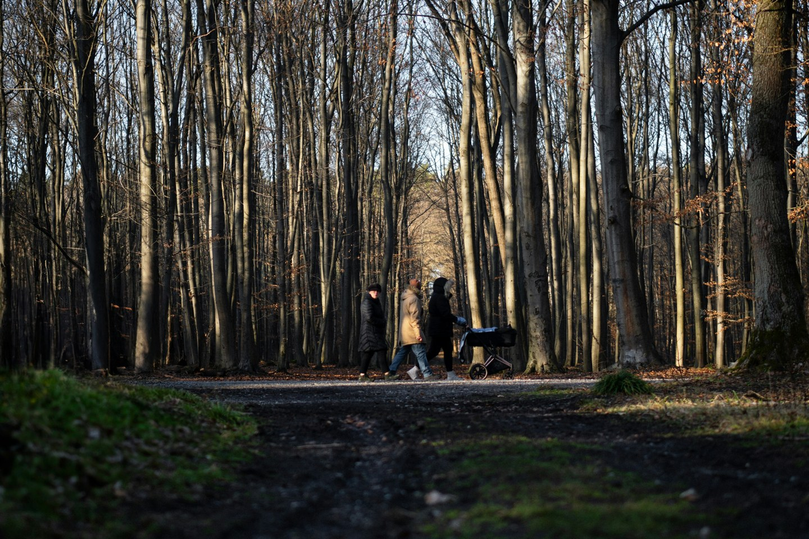
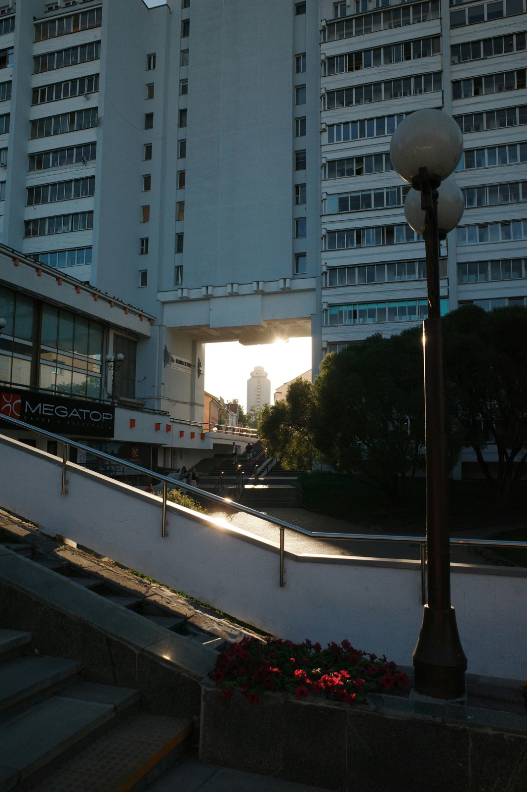
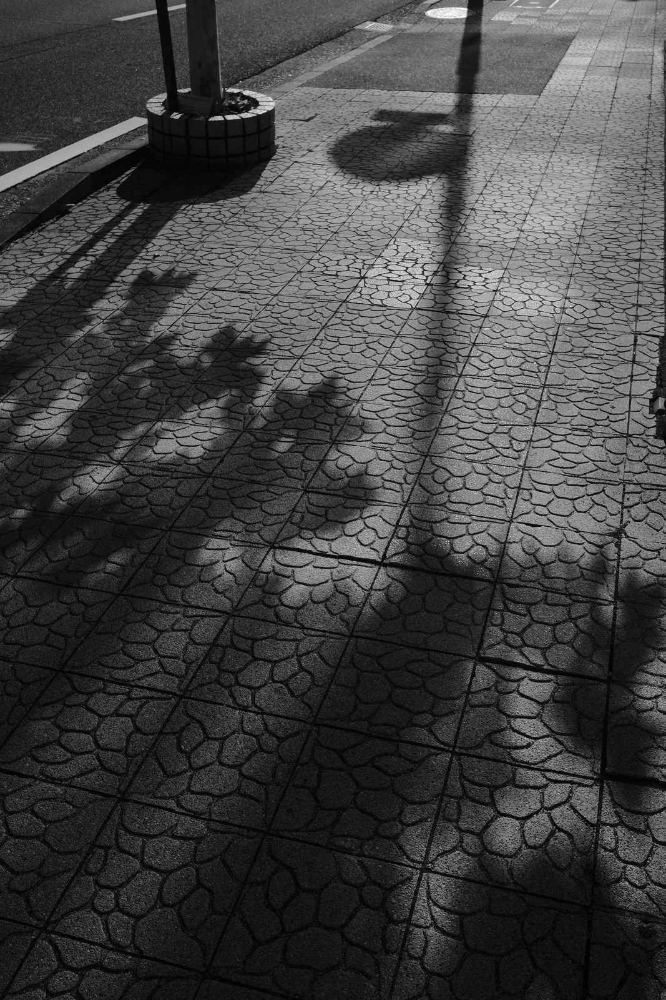
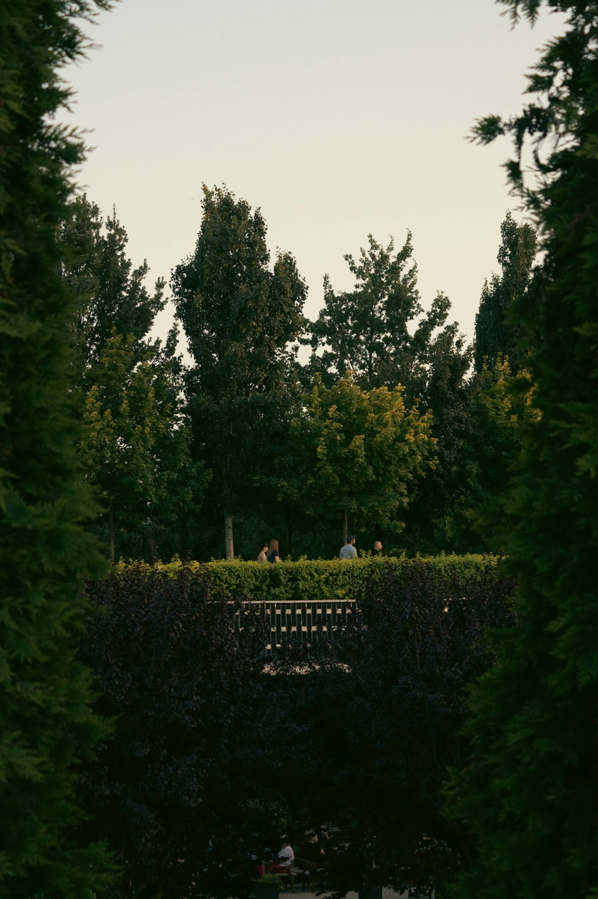
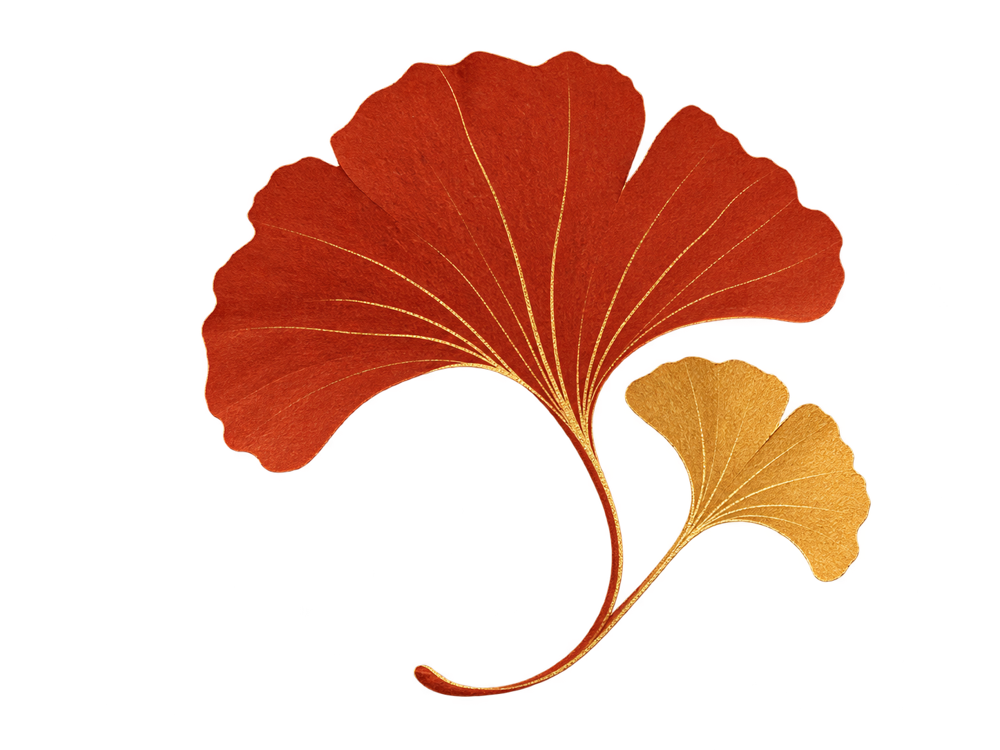
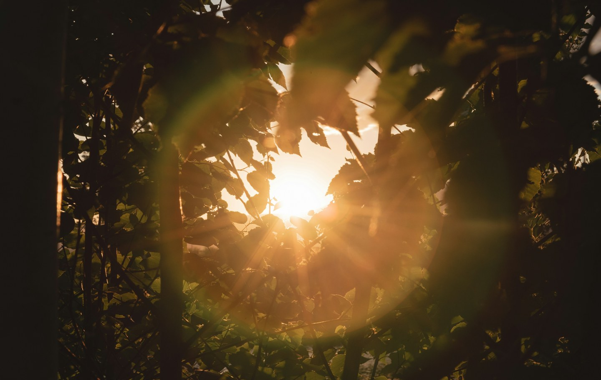

周末出门，有时比上班还忙。先选一家店，再查一条路线，走到哪里都惦记着下一站。到了晚上，手机里添了不少照片，人却没有多少闲下来的感觉。
不妨给自己留一段没有打卡清单的路。远近都可以，走到哪儿算哪儿。路边有树，就看看树；遇到长椅，也可以坐一会儿。

① 林间小路与树影
不用专门找一处风景。家门口的小路、学校外的一条街，或者常常匆匆经过的公园，都可以成为起点。
平时赶路，目光容易只落在前方。慢下来后，可以看看路两旁：哪家店换了招牌，树叶是什么颜色，阳光照到台阶上的时候，影子往哪边落。
 |  |
② 阳光照到街边台阶与扶手上；③ 树影落在人行道上
这些细节不需要整理成什么收获。看见了就好，忘了也没有关系。
路线不必排满。看见一张合适的长椅，就坐一会儿。带一瓶水，翻几页书，或者什么也不做。
 |
 |
④ 公园里的长椅与绿篱
如果和朋友同行，不必一直找话题。聊到哪里算哪里，安静地走一段也很好。一个人出门，也不用急着把每个片刻拍下来。
看到好看的光，先别急着拿手机。看看它落在哪片叶子上，再往旁边挪一步，画面也许就变了。
想拍照当然可以。拍完以后把手机放回口袋，继续往前走。留下来的照片，够自己日后想起这一小段时间就行。
不拍也可以。有些风景只在经过的时候看一眼，并不影响它曾经让人停下脚步。

⑤ 穿过枝叶的阳光
出门前可以给自己一个很小的安排：找一条容易返回的路，穿双舒服的鞋，留一点不用赶时间的余地。
走累了就回去，遇到天气变化也可以提前结束。不必为了完成某个步数，把原本轻松的散步又变成一项任务。
下一个空闲的周末，试着从熟悉的路口出发。手机可以带着，清单就先放在家里。
正文照片为来源明确的摄影作品，仅作氛围示意；拍摄地与文章所述场景不作对应。 页内小插画为生成装饰。
摄影来源
① 摄影：Michał Robak · unsplash.com · 原图 · 许可
② 摄影：Liosha Shyp · unsplash.com · 原图 · 许可
③ 摄影：MAK · unsplash.com · 原图 · 许可